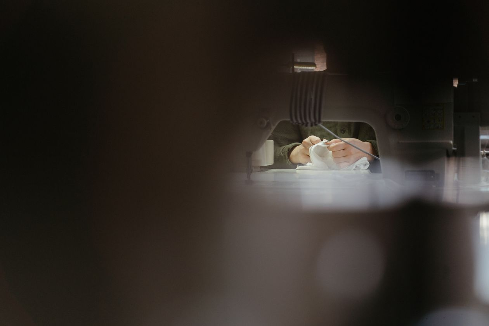
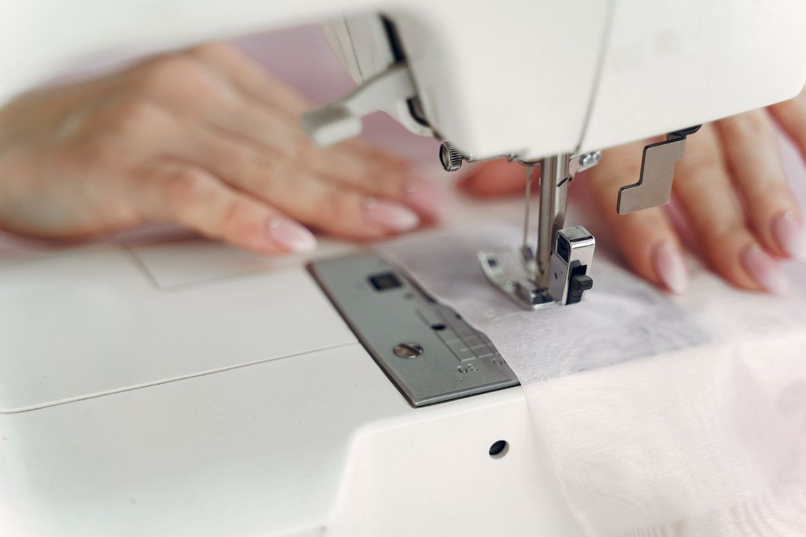
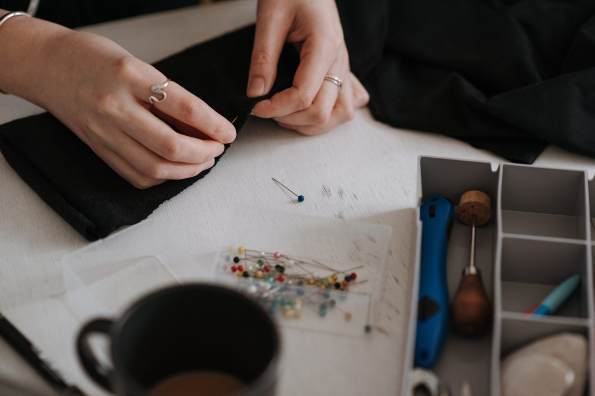

Custom sewing on the Gulf Coast
Gulf Coast Wardrobe is a custom sewing and alterations shop in D'Iberville. The shop takes on custom sewing, contract sewing, and everyday alterations, plus special projects.

Gulf Coast Wardrobe sits at 10303 Gorenflo Rd in D'Iberville. The business describes itself as custom sewing and contract sewing, and reviewers note everyday alterations and special projects.


10303 Gorenflo Rd, D'Iberville, MS
Monday to Friday, 8:00 AM to 5:00 PM